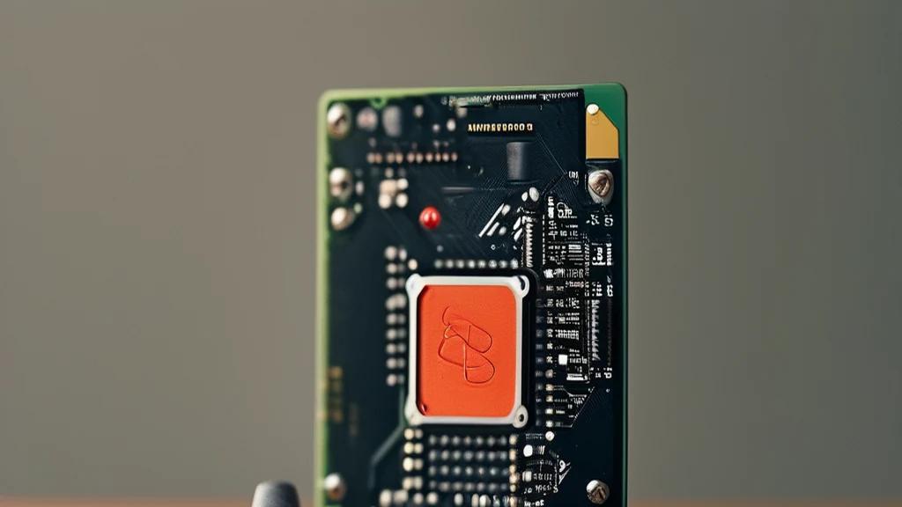
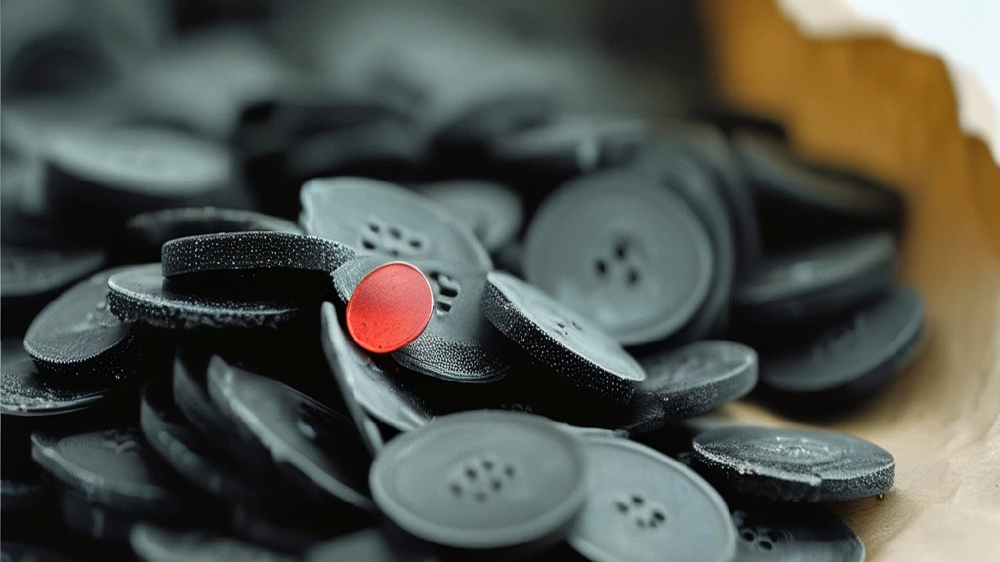
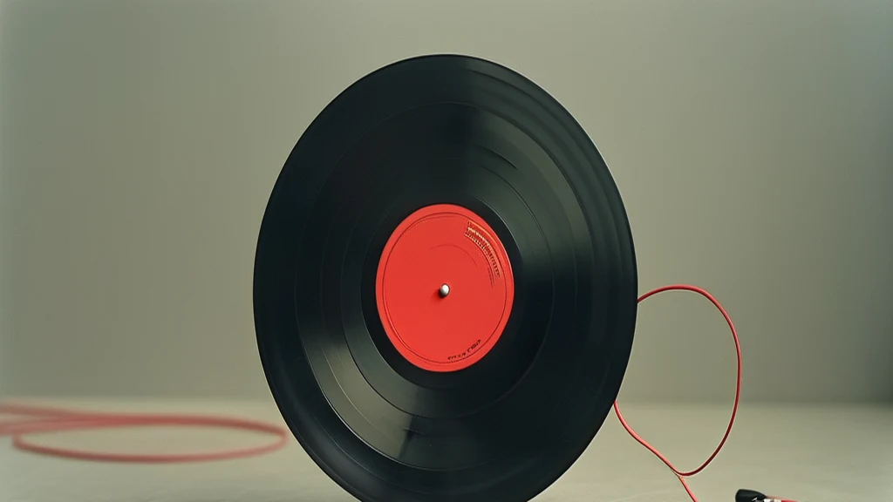
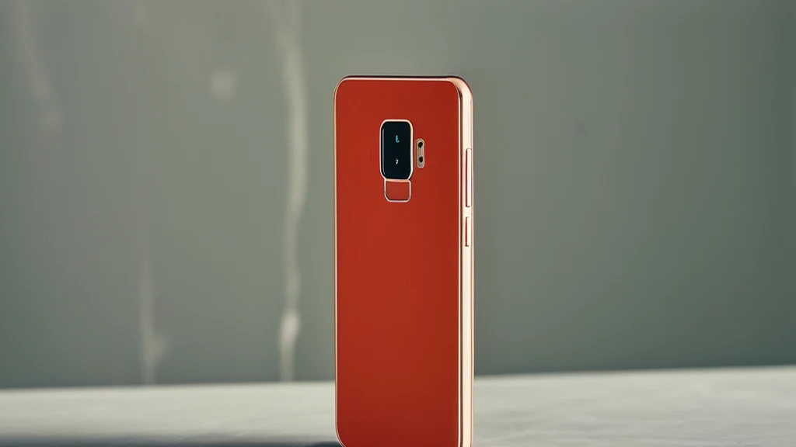
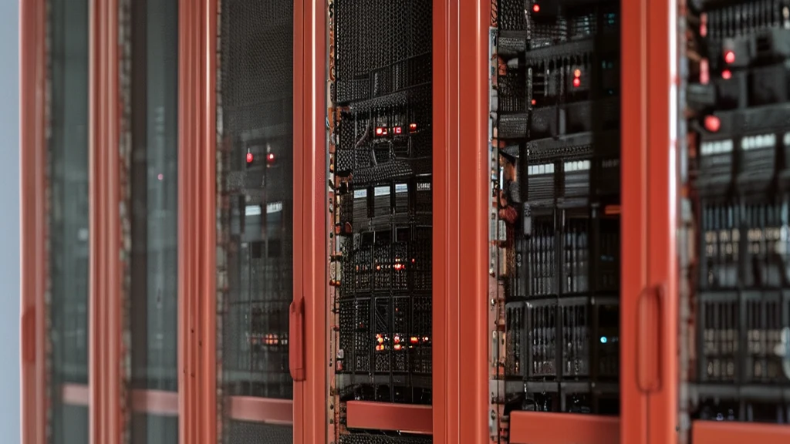

圖片由 AI輔助創作Image by AI
【鄭哥週評】欄目：鄭哥博客週評｜日期：2026-11-22
本週全球 AI 最硬嘅新聞係一個「賬」字：英偉達交出破紀錄季報——營收 1158 億美元、按年翻倍——幾乎同一分鐘宣布停咗對華 H200；美國半年批咗 87.9 萬粒芯片畀中企，DeepSeek 千億融資落定，Suno 用中國模型做視頻，OpenAI 把硬件單下畀立訊、富智康。合埋得一句：全球 AI 嘅錢同產能，正重新計到廣深呢條線上。
圖片由 AI輔助創作Image by AI
一、英偉達破 1158 億，對華 H200 卻落閘
11 月 17 日盤後，英偉達交出黃仁勳辭職後首份季報：營收 1158 億美元、按年升 103%，史上首破千億；數據中心 1076 億、升 110%，佔 93%；Non-GAAP 每股 2.68 美元、毛利率 74.9%，三項全超預期，第四季指引中樞 1300 億美元。
同一場電話會，臨時 CEO 克雷斯宣布唔再向中國出貨特許 Hopper 產品，指引亦唔含相關收入；第三季對華收入 24 億美元，第四季已剔除。我判斷：英偉達賺錢冇變，但中國嘅門係佢自己閂，國產替代由政策逼、變生意都逼。對廣深做算力現貨嘅人，H200 斷供抬高存量卡身價、國產卡詢價喺升：缺口就係生意。
來源：財新《英偉達停止向中國出售H200芯片》，2026-11-18｜https://companies.caixin.com/2026-11-18/102506208.html

圖片由 AI輔助創作Image by AI
二、半年批咗 87.9 萬粒芯，口子其實冇閂
美國眾議院外交委員會 11 月 19 日解密文件顯示，BIS 喺 2025 年 12 月至 2026 年 5 月半年內，批准向中企賣出超 87.9 萬粒高階 AI 芯片，同期申請 340 萬粒。
名單入面，阿里巴巴 7.5 萬粒、騰訊 15 萬粒、百度 4.3 萬粒、比亞迪 4000 粒。我判斷：嘴上收緊、賬上放行——英偉達自己停 Hopper，BIS 審批通道半年照出 87.9 萬粒。對廣深嚟講，騰訊、比亞迪都有份，即算力供給冇斷，只係更貴、更分散；現貨生意賣嘅唔再係「有冇」，而係「以乜嘢價攞到」，信息差同渠道差就係毛利。
來源：CFM閃存市場《美國半年批准87.9萬顆AI芯片售華》，2026-11-20｜https://www.chinaflashmarket.com/newsflash/39381
圖片由 AI輔助創作Image by AI
三、DeepSeek 千億融資落定，騰訊、寧德並列第一大
11 月 19 日工商變更完成：DeepSeek 註冊資本增至 1991.9 萬元（+21.1%），新增持股平台杭州程硯持 17.265%，梁文鋒仍揸實控制權。
杭州程硯新增 31 名合夥人、出資約 34.39 億元：騰訊出資 9.57% 做第一大出資人，寧德時代三隻基金合計 9.57% 並列第一，中移動、中信、立訊、美的、國家 AI 產業基金都入咗股；本輪約 1000 億至 1060 億元，算力係首要投向。我判斷：呢輪錢係攞去買算力，唔係燒模型；騰訊坐第一大、立訊同美的跟投，大灣區喺呢輪唔係配角。
來源：上海證券報《DeepSeek千億融資落定》，2026-11-19｜https://finance.eastmoney.com/a/202611193935308693.html

圖片由 AI輔助創作Image by AI
四、Suno 做視頻，底層係 MiniMax 嘅 H3
11 月 18 日，美國 AI 音樂公司 Suno 宣布伸入視頻生成，新工具 Visuals 把 AI 生成嘅歌、畫面同口型同步成一條流程；官方披露底層模型係「H3 Move」，基於中國 MiniMax 嘅開源 H3 模型。
收費上，14.99 美元買 2500 積分（約 75 秒），120 美元月費含 2 萬積分（約 11 分鐘）。我判斷：美國最叻做歌嘅公司，視頻能力直接借中國開源模型，呢個係「中國模型出海」最實淨嘅註腳。對廣深做短劇同 AI 內容嘅人，Suno 把 15 秒成片成本再壓一檔；廣深團隊攞嚟接單嘅成本優勢仍然喺度。
來源：財聯社《Suno進軍視頻生成賽道》，2026-11-18｜https://m.sohu.com/a/1102923730_222256
圖片由 AI輔助創作Image by AI
五、OpenAI 出硬件，立訊、富智康接咗單
11 月 19 日證券時報援引供應鏈消息，富士康旗下富智康已攞到 OpenAI 手機項目訂單、參與整機組裝；每日經濟新聞指 OpenAI 首款 AI 硬件計劃 2026 年底出貨，立訊精密獨家整機製造並供核心零部件，領益智造、瑞聲科技等亦參與供應。
我判斷：OpenAI 由賣軟件伸腳到賣硬件，第一站就搵廣深蘋果鏈——立訊、富智康、領益、瑞聲全喺深圳、東莞，製造嗰一端幾乎鎖死大灣區。對廣深電子製造嘅人，呢單係風向標：AI 硬件唔再靠手機品牌，模型公司自己落場，產能同工藝嘅門檻反而更值錢。
來源：聯合早報《富智康獲OpenAI手機組裝訂單》，2026-11-19｜https://www.zaobao.com.sg/finance/china/story20261119-10024854

圖片由 AI輔助創作Image by AI
六、華為端出鴻蒙 AI 手機「星芒」，5499 起
11 月 20 日，華為全新子品牌星芒（OSTA）發布首款鴻蒙 AI 手機 OSTA O1 Pro，定位「為 AI 而生嘅鴻蒙手機」，首發搭載 HarmonyOS 7 AI 先鋒版、麒麟 9030S 芯片；12+256G 首發 5499 元、最高 16G+1TB 售 8999 元，16G 版本當日全平台售罄。
我判斷：OpenAI 喺搵立訊做手機，華為已經端出「為 AI 而生」嘅鴻蒙手機——兩邊都係深圳生態：一邊代工接單，一邊自主終端。華為行「芯片＋系統＋端」垂直整合，OpenAI 行「模型＋深圳製造」，前者食自主紅利，後者食製造紅利，都唔係空想。
來源：什麼值得買《華為星芒 O1 Pro 定位鴻蒙 AI 手機》，2026-11-17｜https://post.m.smzdm.com/p/a5rprm37

圖片由 AI輔助創作Image by AI
七、深圳「靈晟」登頂中國超算 TOP100
11 月 15 日第八屆中國超級算力大會發布榜單，國家超算深圳中心嘅「靈晟」登頂中國超算 TOP100；錢德沛院士透露，今年 6 月靈晟已位列世界超算 TOP500 第一。
大會同時披露，鄭緯民院士嘅「異地異構 PD 分離」推理方案已喺全國多地落地，建起多個「Token 工廠」，支撐國產大模型日均萬億級 Token 輸出，總成本降超 20%。我判斷：深圳手揸中國最快嘅機器，喺英偉達斷供、算力收緊嘅一周更值錢；但超算性能要變成可月租嘅推理算力，仲隔一層商業化。靈晟若能把國產算力打成水電煤，嗰個先係廣深 AI 嘅底座。
來源：中國日報網《第八屆中國超級算力大會》，2026-11-17｜https://ex.chinadaily.com.cn/exchange/partners/82/rss/channel/cn/columns/snl9a7/stories/WS6afc15c2e4b0e14252fcbb44.html
圖片由 AI輔助創作Image by AI
八、鄭哥週評
鄭哥週評。呢條線本週往邊度走？一句話：硬件收口，應用放量。英偉達一邊賺到歷史新高、一邊主動閂對華門，說明算力已經由「賣產能」轉成「賣許可同地緣定價」；而 Suno、OpenAI、DeepSeek 全部喺度往應用同終端擠。廣深該做嘅，唔係糾結芯片買唔買得到，而係把算力、製造、場景三張牌打好。
落返廣深：深圳手上兩張牌——一張製造（立訊、富智康、領益接 OpenAI 單，華為出鴻蒙 AI 手機），一張算力（靈晟登頂、騰訊攞 15 萬粒芯片）；廣州攞嘅係場景同政策（詞元經濟、算力券）。呢一格嘅機會，唔喺追最尖嘅模型，而喺把量產、供應鏈同算力成本做實做厚；接唔接得住，睇嘅就係呢兩張牌。
圖片由 AI輔助創作Image by AI
\[Zheng Ge's Weekly Take\] Column: Zheng Ge's blog weekly take | Date: 2026-11-22
This week the hardest news on the global AI line came down to a ledger. Nvidia handed in a record quarter of 115.8 billion dollars in revenue, doubling year on year, and in almost the same breath said it would stop shipping H200 chips to China. On the other side, Washington approved 879,000 chips for Chinese firms in half a year, the DeepSeek mega-round closed with Tencent and CATL as the largest backers, Suno built its video feature on a Chinese model, and OpenAI placed its hardware orders with Luxshare and FIH. Taken apart they are seven stories; taken together they are one sentence: the money and the manufacturing capacity of global AI are being settled, increasingly, on the Guangzhou-Shenzhen line.
圖片由 AI輔助創作Image by AI
1. Nvidia Shatters $115.8B, Then Closes the H200 Door to China
On the evening of 17 November Nvidia posted its first earnings since Jensen Huang stepped down: fiscal-Q3 2027 revenue of 115.8 billion dollars, up 103% year on year and 20% quarter on quarter, the first quarter above 100 billion. Data-centre revenue was 107.6 billion, up 110%, or 93% of the whole; non-GAAP EPS came to 2.68 dollars with a 74.9% gross margin, all three beating expectations, and Q4 guidance centres on 130 billion.
On the same call, interim CEO Colette Kress announced that Nvidia would no longer ship licensed Hopper data-centre products to China and that future guidance excludes that revenue; the China piece was worth 2.4 billion dollars (about 16 billion yuan) in Q3 and is stripped out of Q4. My read: Nvidia's earning power is intact, but it chose to shut the China door itself, which turns the domestic-substitution window from something forced by policy into something forced by business too. For the compute spot-market crowd in Guangzhou and Shenzhen, two things now land at once: the H200 cutoff lifts the value of existing cards, while inquiries for domestic chips keep climbing. The gap is the business.
Source: 財新《英偉達停止向中國出售H200芯片》，2026-11-18 | https://companies.caixin.com/2026-11-18/102506208.html
圖片由 AI輔助創作Image by AI
2. 879,000 Chips Approved in Six Months - the Gate Never Really Closed
Documents declassified by the US House Foreign Affairs Committee on 19 November show that between December 2025 and May 2026 the Commerce Department BIS approved the sale of more than 879,000 high-end AI chips to Chinese firms, out of 3.4 million applied for over the same six months.
On that approval list: Alibaba got 75,000, Tencent 150,000, Baidu 43,000, BYD 4,000. My read: the words say tighten, the books say release - Nvidia stops Hopper on its own, but the BIS approval lane still shipped 879,000 chips in half a year. For the region that means compute supply is not cut off, only dearer and more fragmented: Tencent in Shenzhen took 150,000 chips, BYD in Shenzhen 4,000. The spot-compute trade in Guangzhou and Shenzhen no longer sells have-or-have-not - it sells who can get it, and at what price. The information gap and the channel gap are the margin.
Source: CFM閃存市場《美國半年批准87.9萬顆AI芯片售華》，2026-11-20 | https://www.chinaflashmarket.com/newsflash/39381
圖片由 AI輔助創作Image by AI
3. DeepSeek Mega-Round Closes, Tencent and CATL Tied as Largest Backers
The business registration was completed on 19 November: the DeepSeek registered capital rose from 16.447 million yuan to 19.919 million (+21.1%), with a new holding vehicle, Hangzhou Cheng Yan, taking 17.265%; Liang Wenfeng still controls that vehicle through Hangzhou Cheng Ce.
Cheng Yan added 31 partners at once with about 3.439 billion yuan in committed capital: a Tencent entity took roughly 9.57% as the largest backer, three CATL funds totalled 9.57% in a tie for first, China Mobile and CITIC Securities followed at about 7.65%, and the Luxshare-affiliated Lizhen Precision (2.77%), Midea (2.87%) and the National AI Industry Fund (0.39%) all subscribed; media earlier put the round at 100 to 106 billion yuan, with compute as the first deployment. My read: the money's destination is obvious - it is not for burning on models, it is for buying compute. Tencent, CATL, China Mobile, Luxshare, Midea: almost all are industrial capital with real scenarios or real capacity. For this region, with Tencent the largest backer and Luxshare and Midea co-investing, the Greater Bay Area is no supporting actor in this round.
Source: 上海證券報《DeepSeek千億融資落定》，2026-11-19 | https://finance.eastmoney.com/a/202611193935308693.html
圖片由 AI輔助創作Image by AI
4. Suno Moves Into Video - on MiniMax H3 Underneath
On 18 November the US AI-music company Suno said it was extending its product line into video generation with a new tool called Visuals, which brings AI-generated songs, images and lip-synced footage into a single creative flow. The product page discloses that the underlying model is H3 Move, built on the open-source H3 model from China, which Suno then fine-tuned on its own data for music videos.
Pricing: 14.99 dollars buys 2,500 video credits (about 75 seconds); the 120-dollar monthly tier includes 20,000 credits (about 11 minutes). My read: the best music company in America now borrows its video capability straight from a Chinese open-source model - that is the week's most concrete footnote on Chinese models going abroad: no longer a leaderboard, but inside someone else's paid product. For short-drama and AI-content makers in Guangzhou and Shenzhen, Suno bundles music + picture + lip-sync into one-click generation, compressing the cost of a 15-second clip another notch; with models like MiniMax, the cost edge that local teams use to take orders is still there.
Source: 財聯社《Suno進軍視頻生成賽道》，2026-11-18 | https://m.sohu.com/a/1102923730_222256
圖片由 AI輔助創作Image by AI
5. OpenAI Ships Hardware - Luxshare and FIH Take the Orders
On 19 November Securities Times, citing supply-chain sources, reported that the Foxconn affiliate FIH has won the OpenAI phone project order for final assembly; National Business Daily, also citing the supply chain, said the first OpenAI AI hardware device is slated to ship by end-2026, with Luxshare Precision as the sole manufacturer of the finished unit and supplier of core parts. Caixin Global supply-chain sources added that the first OpenAI phone could land in late 2027 or 2028, with the Apple-chain firms Luxshare, Lingyi iTech and AAC Technologies supplying components.
My read: OpenAI is reaching from selling software to selling hardware, and its first stop is the Guangzhou-Shenzhen Apple chain - Luxshare, FIH, Lingyi, AAC, all based in Shenzhen or Dongguan. The people best at building AI and the people best at building hardware are converging, and the manufacturing end is nearly locked to the Greater Bay Area. For anyone in local electronics manufacturing, this is a weathervane order: AI hardware no longer waits on phone brands - the model companies are coming in directly, and the bar on capacity and craftsmanship is worth even more.
Source: 聯合早報《富智康獲OpenAI手機組裝訂單》，2026-11-19 | https://www.zaobao.com.sg/finance/china/story20261119-10024854
圖片由 AI輔助創作Image by AI
6. Huawei Rolls Out the HarmonyOS AI Phone Xingmang, From 5,499 yuan
On 20 November the new Huawei sub-brand Xingmang (OSTA) unveiled its first HarmonyOS AI phone, the OSTA O1 Pro, positioned as a HarmonyOS phone born for AI, with HarmonyOS 7 AI Edition and the Kirin 9030S chip on board; it has a 6.39-inch 1.5K display and a 7,000 mAh battery, with the 12+256GB version at 5,699 yuan (5,499 launch price) and the top 16G+1TB at 8,999 yuan, on sale from 18:08 that evening; the 16GB version sold out across all channels on launch day.
My read: while OpenAI is asking Luxshare to build a phone, Huawei has already put out a HarmonyOS phone born for AI - and both are Shenzhen ecosystems: one side contract manufacturing, the other an independent device. Shenzhen is betting both ends of the AI-hardware square. People here should see the two roads clearly: the Huawei line runs on chip + OS + device vertical integration, while the OpenAI line runs on model + Shenzhen manufacturing. The first eats the self-reliance dividend, the second the manufacturing dividend - neither is easy, and neither is a fantasy.
Source: 什麼值得買《華為星芒 O1 Pro 定位鴻蒙 AI 手機》，2026-11-17 | https://post.m.smzdm.com/p/a5rprm37
圖片由 AI輔助創作Image by AI
7. Shenzhen Lingsheng Tops the China TOP100 Supercomputers
At the eighth China Supercomputing Conference (ChinaSC 2026) on 15 November, the National Supercomputing Center in Shenzhen system Lingsheng topped the China TOP100; in his address, Academician Qian Depei noted that Lingsheng had already ranked first in the world TOP500 this June.
The conference also disclosed that Academician Zheng Weimin geographically distributed heterogeneous PD-separation inference scheme is now live in many places across the country, running several Token factories that support domestic large models at trillions of tokens a day and cut total cost by more than 20%. My read: Shenzhen holds the fastest machine in the country, and that card got more valuable over the past week of Nvidia cutoffs and tightening compute - but turning supercomputer performance into affordable compute still has one layer of commercialisation in between. What local small teams actually lack is not the fastest machine but cheap, stable, rentable-by-the-month inference compute; if Lingsheng and the Token factories can turn domestic compute into water-and-electricity, that is the real foundation for Guangzhou-Shenzhen AI.
Source: 中國日報網《第八屆中國超級算力大會》，2026-11-17 | https://ex.chinadaily.com.cn/exchange/partners/82/rss/channel/cn/columns/snl9a7/stories/WS6afc15c2e4b0e14252fcbb44.html
圖片由 AI輔助創作Image by AI
8. Zheng Ge's Weekly Take
Zheng Ge's weekly take. Which way is this line going this week? In one sentence: hardware is closing up, applications are opening out. Nvidia earned a record high and, in the same motion, shut its China door on its own - a sign that compute has gone from selling capacity to selling licences and geopolitical pricing; meanwhile Suno, OpenAI and DeepSeek are all pushing toward applications and devices. What Guangzhou and Shenzhen should do is not agonise over whether we can still buy chips, but play the three cards already in hand: compute, manufacturing, and scenarios.
Landing back in the region: Shenzhen holds two cards - manufacturing (Luxshare, FIH and Lingyi taking OpenAI orders, Huawei shipping a HarmonyOS AI phone) and compute (Lingsheng topping the list, Tencent taking 150,000 chips); Guangzhou holds scenarios and policy (token economy, compute vouchers). The opportunity in this square is not chasing the sharpest model, but doing the volume manufacturing, supply-chain and compute-cost work that others are afraid to do, and doing it thick. The global AI ledger is being re-settled onto Guangzhou and Shenzhen; whether we can take it depends on those two cards.